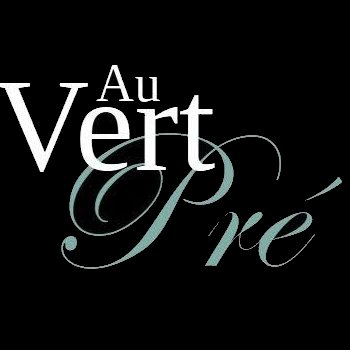
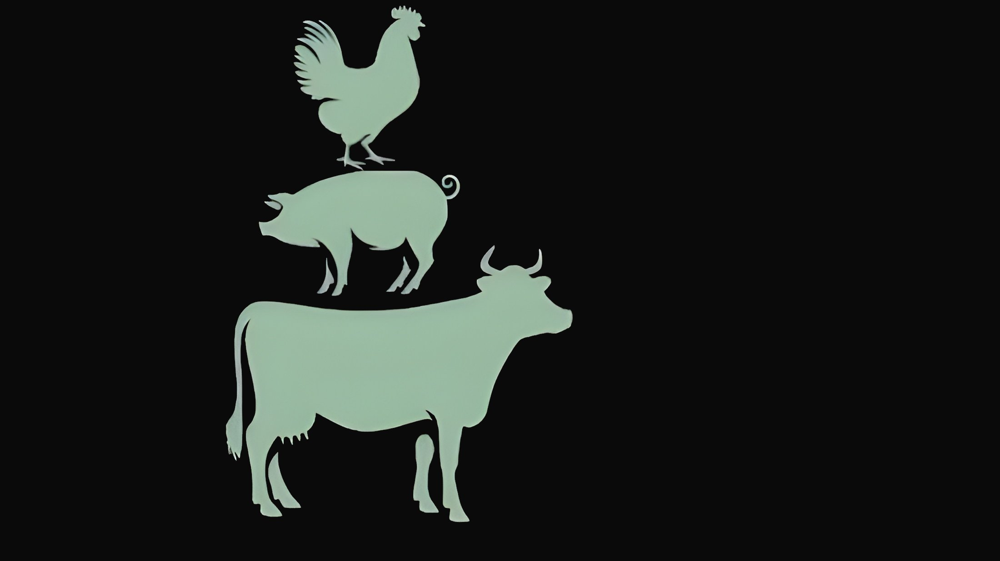

La tradition bouchère au cœur de Mouvaux. Qualité, exigence et savoir-faire pour des viandes d'exception et un service traiteur raffiné.
Découvrir la boutiqueSituée au 6 Rue du Vert Pré à Mouvaux, notre boucherie est une institution locale reconnue pour son exigence de qualité et son amour du bon produit.
Nous sélectionnons rigoureusement nos viandes auprès d'éleveurs passionnés, en privilégiant les circuits courts et les races de tradition. Notre équipe d'artisans bouchers prépare chaque jour des produits frais, respectant les méthodes traditionnelles pour vous offrir le meilleur de la gastronomie française.
Bœuf maturé, veau de lait, agneau de prés salés, volailles fermières... Une sélection rigoureuse pour les amateurs de viandes savoureuses et tendres.
Découvrez notre charcuterie artisanale faite maison : terrines, pâtés, saucissons et jambons préparés dans le respect des recettes d'antan.
Plats cuisinés quotidiens ou organisation de vos événements festifs. Nous vous accompagnons avec des menus sur-mesure et des produits d'exception.
Nous sommes ravis de vous accueillir en boutique pour vous conseiller.
6 Rue du Vert Pré
59420 Mouvaux, France